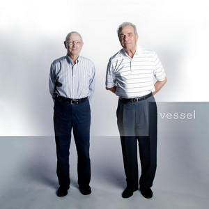
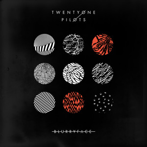
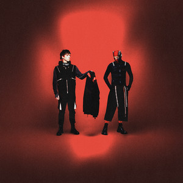

TWENTY ONE PILOTS
Desde Self-Titled, Regional at Best, Vessel, Blurryface y Trench hasta Clancy y Breach. Incluye filtros para quitar conciertos, MTV Unplugged, remixes, lados B y comentarios.
▶ JUGAR TWENTY ONE PILOTS